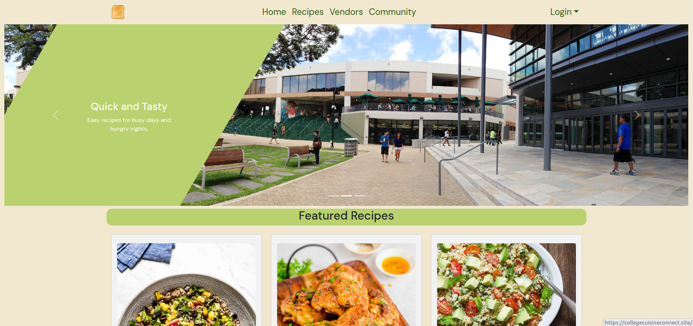

Home Page: 
Recipe Page:
Vendor Page:
During a software engineering class, I worked with four other students on a final project that culminated what we had learned in the class. We were to build a web application using a Meteor React template that featured various capabilities such as a navigational bar and user accounts. The specific application we were tasked with was a recipe hub for college students where they could get recipe inspirations while also sharing their own. The final product was called College Cuisine Connect. Since the project was tailored to college students the recipes were meant to be simple and doable with minimal equipment. Additionally there was a vendor functionality where they could see local stores and the ingredients they sold to determine where to go to get the needed ingredients for their desired recipes. The goal of this project was to create an environment that helped college students transition to cooking with often limited supplies and limited experience. From a technical standpoint my team used Agile Project Management and Issue Driven Project Management for the organization and execution of the project. Additionally, we utilized GitHub for configuration management. We met biweekly to update the group on our progress and discuss any other problems we encountered.
My team took a large amount of time planning early on. We discussed the functionality of the project such as the pages and collections that would be used so that it was clear throughout the project what the goal was. As such we came to the conclusion that the project tasks could be split nicely into groups regarding recipes, vendors, formatting (navigation bar, landing, footer, etc.), and various tasks such as deployment and continuous integration. From this list I was responsible for the vendors with one other teammate and continuous integration. Within the vendors I worked on the components and pages such that any one, logged in or not, could see a page that would list all the vendors and their details like location and ingredients sold. Additionally, if a vendor user was logged in they would be able to see the stores they owned, with capabilities to edit the existing stores and add more. Then with the continuous integration I utilized GitHub actions and testcafe to run tests that would ensure all code met ESLint coding standards and that the implemented pages and forms worked. Considerably my team also did a good job filling in when needed, when a miscellaneous task came up someone would always be willing to step in meaning we were not constrained to just the general tasks we were established. The team’s collaborative attitude and flexibility ensured that progress was consistent and smooth.
This project taught me many technical lessons regarding software engineering but also general lessons that apply to any group work environment. Through using GitHub throughout the project I became much more confident in my skills regarding branches, merging, and handling conflicts. Similarly, I am glad that I was tasked with the continuous integration because that was a topic that intrigued me, yet also intimidated me. Being able to implement this feature forced me to better understand what ci (continuous integration) meant and what it means to automate tests using suites like TestCafe.
From a non technical perspective I learned what it meant to have a group that effectively collaborates and communicates. Early on there were a lot of ideas and a considerable amount of confusion but we took the time to listen and consider everyone’s thoughts until we came to the final agreement on the design of the project. One aspect of this project that I had not encountered before was a priority when delegating tasks was making sure everyone was comfortable with the amount of work they had to complete. Meaning they were confident that they had enough to effectively contribute to the project, but not too much as to be unrealistic and take away tasks from someone else. These interactions with my team made working on our project very enjoyable and informative on how to effectively collaborate as a team.